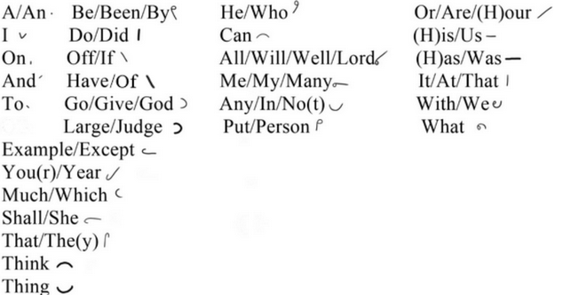

Common words in English have special spellings called brief forms. These brief forms make writting NeoTaylor much faster. They should be memorized as thoroughly as the alphabet is.
The top-left most brief forms (A, I, On, And, To) are all written noticably smaller than the normal outlines as to not look like other letters or words.
The brief forms "Lord" and "God" can be further distinguished from the other L and G brief forms by marking them with the proper-noun mark.
Phrasing is when brief forms are written in one outline. They should generally be 3 or less strokes in size and only contain brief forms. Phrases should not use intersections. Rule 9 also applies to phrasing.